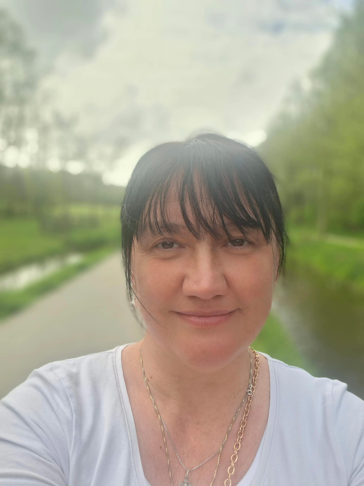

Hoe vader Onufry het ontstaan van het klooster met eigen ogen zag

Joanna zag de Orthodoxe kerk in Leeuwarden groeien. Wat zagen haar ogen in de vijftien jaar dat de Orthodoxe kerk bestond in Leeuwarden.
In deze reeks interviews praten we met mensen die het ontstaan van de Orthodoxe gemeenschappen
rondom Hemelum vanaf het eerste uur hebben meegemaakt. Joanna Boikovska heeft het ontstaan van de
Orthodoxe kerk in Leeuwarden met haar eigen ogen gezien. De ontwikkeling van de Lutherse kerk tot
het Cultuurcentrum aan de Oldegalileën heeft zij allemaal meegemaakt. Hoe heeft zij dat ervaren? En
hoe ziet zij de toekomst?
“Eerst was het in Hemelum”, zegt Joanna. “Toen kwam het ter sprake dat er een nieuwe parochie gesticht
kon worden. De mensen die altijd naar Hemelum gingen, gingen toen naar Leeuwarden.” Het was een kleine
groep die zich opperde. “Bijna twintig mensen kwamen naar Hemelum, veel minder dan nu.” “De kerk was
heel internationaal. Geen enkele etnische groep had de meerderheid. Er waren Servische, Griekse en heel
veel Nederlandse mensen. Ook Amerikanen, van alles. De diensten waren minder in het kerkslavisch, in
tegenstelling tot nu.”
De Orthodoxe gemeenschap van Johannes de Doper heeft meerdere plekken gebruikt voor de goddelijke
liturgie. De diensten werden voor het eerst gehouden in de Lutherse kerk van Leeuwarden. Nadat de
wekelijkse huur te hoog bleek te zijn, moest de jonge geloofsgemeenschap verhuizen naar RK parochiezaal
de Stelp
“Het was een heel oud gebouw, desondanks heel gezellig. Toen was er een man genaamd Wiebe. Wiebe had een
tuincentrum en was niet orthodox. Hij voelde zich wel heel thuis bij ons. Vanuit zijn tuincentrum nam
hij bloemen mee. Dat gebouw associeer ik altijd met de bloemen van Wiebe. Na elke dienst mochten we
bloemen meenemen. Wiebe was heel speciaal voor ons.” Uiteindelijk verhuisde de gemeenschap van de Stelp,
naar de wijkcentrum Bildegaard, door naar het cultuurcentrum Oldegalileën, waar de Orthodoxe kerk nog
steeds haar diensten houdt.
Joanna kijkt met verbazing naar de groei van de Orthodoxe kerk. Ook in Leeuwarden ziet zij meer mensen
opkomen dagen.
“Natuurlijk is het mooi en zeker bijzonder. Vooral omdat het merendeels jonge mannen zijn. Ik denk soms
waar blijven de vrouwen, de mannen blijven alleen achter”, lacht Joanna.
“Maar het is een punt, want veel mannen zijn zeer betrokken en fanatiek. Dat wordt wel moeilijk met
relaties. Misschien ligt het aan mij, maar ik merk ook dat de mannen bij de mannen blijven en de oudere
parochianen bij de oudere parochianen. Het zou goed zijn als er wat meer samenhang zou zijn tussen die
twee groepen. Vroeger in Hemelum waren we echt een. Een Orthodoxe kerk in Bulgarije of Rusland is
anders, omdat je altijd met je eigen cultuur in aanraking komt. In een parochie met vele nationaliteiten
moet iedereen het gevoel hebben dat ze er deel van uitmaken.”
Een van de meest herkenbare momenten van de orthodoxe gemeenschap was een jubileumdienst met de
bisschop. “Je realiseert dan dat we begonnen met een paar mensen en opeens was het heel groot.”
De oorlog in Oekraïne kan ook niet genegeerd worden in de geschiedenis van de Orthodoxe kerk, ook niet
die van Leeuwarden. “Opeens waren er heel veel Oekraïense vluchtelingen, helaas ook mensen die zijn
gestopt. Dat is heel jammer en ik hoop dat deze mensen ooit hun weg weer terugvinden. De vluchtelingen
voelen zich gelukkig thuis in de kerk.”
Wat heeft de Orthodoxe kerk in petto voor de toekomst?
Joanna zegt duidelijk “Vader Michael”. “Hij is een verbindend iemand. Hij is ambitieus en vol energie.
Ik ben positief over de toekomst. Over tien jaar bestaan we nog steeds, dat is een geschenk.”
Lachend concludeert ze “Ik wil niet ouder worden, maar ben wel benieuwd hoe de toekomst eruit gaat
zien.”

Oksana kwam van Oekraïne naar Nederland en vond een thuis in het klooster en Leeuwarden
In deze reeks interviewen we ook Oksana. Zij kwam van Oekraïne naar Nederland en heeft zich al vroeg
aangesloten bij de kerk in Leeuwarden en het klooster. Ook haar vragen we hoe ze de ontwikkelingen
rondom het klooster heeft zien plaatsvinden.
Hoe ben je aangesloten bij het klooster?
“Origineel kom ik uit Oekraïne. Ik ben al 25 jaar in Nederland en sinds 2014 ga ik naar de kerk. Een
vriendin, die ik leerde kennen bij de Nederlandse taallessen, nam me mee naar een paasdienst. Ze zei:
‘Kom, laten we “Koelitsi” (paasbrood) maken en naar de paasdienst gaan’. En ik was helemaal niet op de
hoogte dat hier in de buurt diensten waren. Toen ik de dienst hoorde, voelde ik me zo thuis.”
“Toen ik voor het eerst bij het klooster kwam, stond de iconostase er al, dus het klooster was
grotendeels klaar. We hadden één Goddelijke Liturgie in de week, een Vesper in Groningen en een
Goddelijke Liturgie in Leeuwarden. De gemeenschap in Zwolle bestond toen nog niet. elke donderdag was er
een akathist voor de H. Nikolaas. Daar waren twee of drie mensen bij. Bij de diensten door de week waren
er zes tot zeven mensen. Ook waren er veel vrouwen in de kerk, meer dan mannen. Eigenlijk waren er heel
weinig mannen,” zegt Oksana met een kleine lach.
“Ik had het gevoel dat ik thuiskwam. Tijdens de paasdienst voelde ik me meteen thuis. Het voelde zo
vertrouwd.”

Er is de afgelopen tijd een groei van bezoekers in onze kerk en veel mensen willen zich aansluiten. Wanneer begon die groei vanuit uw perspectief?Dat begon toen wij een Liturgisch leven begonnen op te bouwen. We hebben een half jaar een Oekraïense priester bij ons gehad in Leeuwarden, en die zei ook: ‘Wij beginnen te groeien wanneer wij een liturgisch leven opbouwen.’ Om de Liturgie heen zijn wij gegroeid. We zijn begonnen met Vader Jewsewy in het gebouw van de Lutherse Kerk van Leeuwarden. Toen ik aankwam, waren ze er al een paar jaar. Daarna zijn we nog bij het gebouw De Stelp geweest, een RK parochiezaal. Toen kwam er een groep van ongeveer 25 mensen voor de Liturgie en ongeveer zeven tot acht mensen bij de vesper. Vader Jewsewy had dan eerst een vesper in Groningen en daarna nog een vesper bij ons. Vanuit daar zijn we verhuisd naar het wijkcentrum van Bilgaard. Maar dat was zo’n kleine ruimte dat we er bijna niet in pasten.” Tijdens corona had de parochie het moeilijker. “We konden niet altijd onze diensten houden. Soms zei het cultuurcentrum: ‘Probeer maar’. Maar er zijn ook periodes geweest waarin er helemaal geen diensten mochten plaatsvinden. Toen zeiden we dat we verder moesten zoeken, omdat er ook meer mensen kwamen. En zo zijn we nu terechtgekomen bij het Cultureel centrum aan de Oldegalileën. Dat is een grote, open ruimte. Toen dacht ik ook: ‘Nu mogen de mensen wel komen’,” zegt Oksana lachend. “En sinds we in het nieuwe gebouw zitten, beginnen we te groeien. Sinds we meer ruimte hebben, komen er ook meer gezinnen met kinderwagens, maar ik zie ook steeds meer jongeren komen. Dat is heel bijzonder. Ook veel Nederlanders.”
Nederlanders zonder orthodoxe achtergrond die naar een orthodoxe kerk gaan, is dat abnormaal voor u?
“Wat mij opvalt, is dat veel Nederlandse jongeren naar de kerk komen om vragen te stellen. Niet alleen om te gehoorzamen, maar ook om zich te verdiepen in het geloof. Ik werk in een bejaardentehuis en ik hoor van oudere mensen dat ze naar de kerk moesten. En bij velen is het daarbij gebleven, omdat het moest. Over hun kinderen zeggen ze dan dat het hun eigen keuze is. Dan is het bijzonder dat Nederlandse jongeren uit zichzelf gaan zoeken.”
Documentaire over de jaarlijkse Odulfusbedevaart
In Súdwest-Fryslân wordt elk jaar op 12 juni, de sterfdag van de heilige Odulfus, een bedevaart georganiseerd...